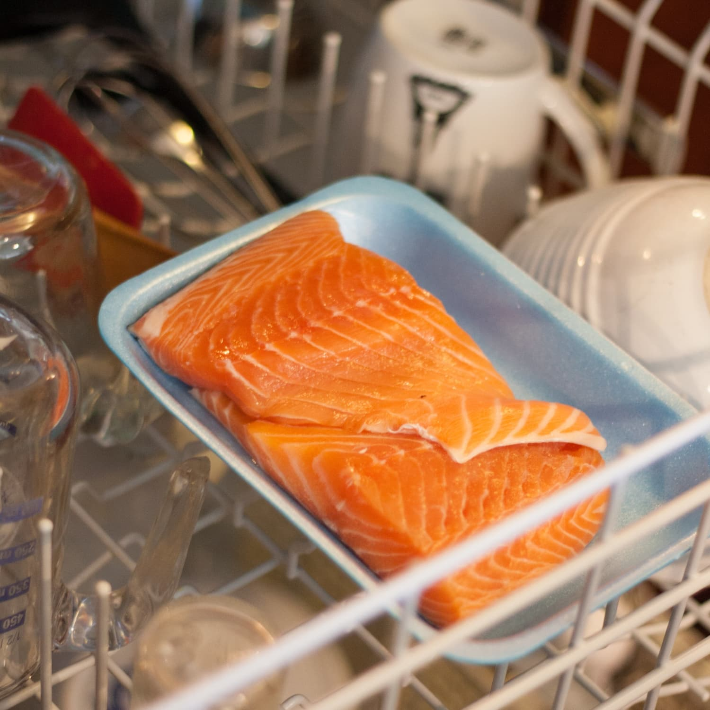

Dishwasher Salmon Recipe

Description
Yes, this is a real recipe.
Ingredients
- Salmon
- Lemon
- Sprig fresh rosemary
- Kosher salt
- Pepper
Steps
- Wrap the filet, 1/2 lemon, and rosemary tightly in tin foil.
- Place foil packet in the top rack of your dishwasher.
- Use the heated water and heated dry cycle.
- Salt and Pepper to taste- plate and serve immediately.
- Clap.
Go Back